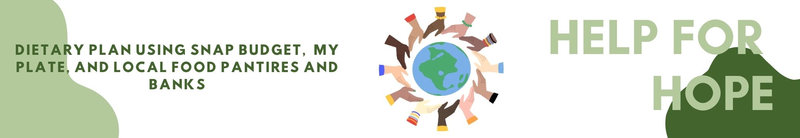

Help For Hope is a website that helps create a nutritious meal plan using a local food pantry and snap bugdet contributing to you necessary MyPlate.
You can begin browsing the website with filling out the MyPlate Chart which explains to you the amount of certian foods you need to reach your calorie intake for your body. :)
Or you can click on one of the images below to go directly to the My Plate website.


Instructions:
To get a food plan made by Help For Hope you need to first complete a certain amount of steps.
First we would like you to go on MyPlate.gov by clicking on the image or side links.
Then we need you to fill out the questions to get the amount of nutrients you need in each section of the MyPlate to have a healthy meal everyday.
You may then be able to go ahead and fill out the google form with questions on your MyPlate results.
Or if you'd like you can click on the SNAP program to learn more about it and or fill out a SNAP appliction if needed.
If you only fill out the MyPlate questions that is fine but you would only be getting a dietary plan using local food pantries and banks but if you have the SNAP program we would be using both to better help you on having a nutritious meal everyday.
Help For Hope would then get back to you in about 1-3 business days after filling out the google form with your filled out dietry plan via email :)
© Copyright 2022. All Rights Reserved. Help For Hope, Inc.